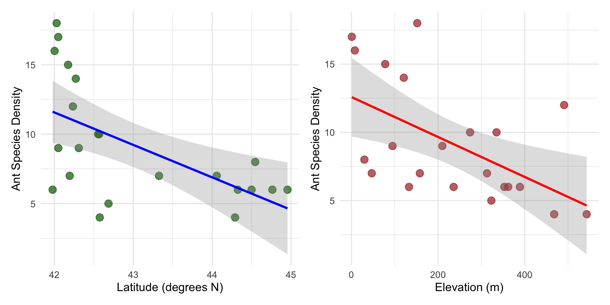
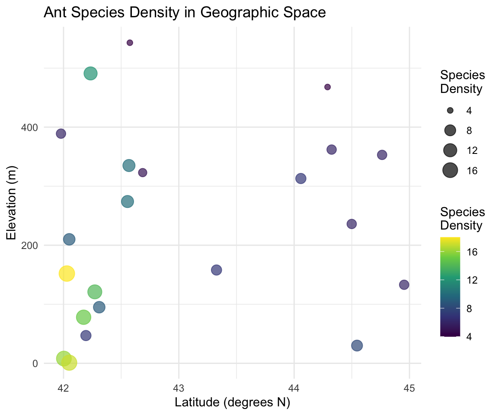

Introduction to Multiple Linear Regression Analysis
Background and Theory
Multiple linear regression extends simple linear regression to model the relationship between a continuous response variable (Y) and multiple predictor variables (X₁, X₂, …, Xₚ). In this analysis, we will examine how ant species density varies with both latitude and elevation across sampling sites.
Gotelli, N. J. and A. M. Ellison. 2002a. Biogeography at a regional scale: determinants of ant species density in New England bogs and forest. Ecology 83: 1604–1609.
Gotelli, N. J. and A. M. Ellison. 2002b. Assembly rules for New England ant assemblages. Oikos 99: 591–599.
NoteAnt Species Diversity Study Background
This dataset examines factors affecting ant species density:
Research Question: How do latitude and elevation jointly affect ant species density?
Study Design: Observational study across multiple geographic locations
Response Variable: Number of ant species per sampling site (species density)
Predictor Variables:
Latitude: Geographic latitude (degrees north)
Elevation: Elevation above sea level (meters)
Biological Expectations:
Latitude: Species density may decrease with increasing latitude (latitudinal diversity gradient)
Elevation: Species density may decrease with increasing elevation (elevational diversity gradient)
\(Y_i\) is the response variable (ant species density for site i)
\(X_{i1}\) is the first predictor variable (latitude for site i)
\(X_{i2}\) is the second predictor variable (elevation for site i)
\(\beta_0\) is the intercept (expected species density when latitude = 0 and elevation = 0)
\(\beta_1\) is the partial slope for latitude (change in species density per unit change in latitude, holding elevation constant)
\(\beta_2\) is the partial slope for elevation (change in species density per unit change in elevation, holding latitude constant)
\(\varepsilon_i\) is the error term (random deviation from the regression hyperplane)
ImportantKey Concept: Partial Slopes
In multiple regression, each slope coefficient represents the partial effect of that predictor:
\(\beta_1\): Change in Y per unit change in X₁, holding X₂ constant
\(\beta_2\): Change in Y per unit change in X₂, holding X₁ constant
This allows us to isolate the effect of each predictor while controlling for the others.
Method of Least Squares
The regression hyperplane is fitted using the method of least squares, minimizing:
\[\sum_{i=1}^{n} (y_i - \hat{y}_i)^2\]
Where \(\hat{y}_i = b_0 + b_1 x_{i1} + b_2 x_{i2}\) is the predicted value from the fitted model.
Data Analysis
Loading Libraries and Data
# Load required librarieslibrary(lmtest) # For Breusch-Pagan testlibrary(patchwork) # For combining plotslibrary(car) # For regression diagnostics and VIFlibrary(skimr) # For data summarylibrary(tidyverse) # For data manipulation and visualization# Load the ant species density dataant_df <-read_csv("data/AntSpeciesDensity.csv")# Preview the datahead(ant_df)
Elevation: Ranges from 1 to 543 meters above sea level
Ant Species Density: Ranges from 4 to 18 species per site
Study region: Appears to be from a temperate region (possibly northeastern North America)
Data Visualization
Exploratory Scatterplots
Let’s examine the relationships between variables:
# Create individual scatterplots for each predictorp1 <- ant_df %>%ggplot(aes(x = Latitude, y = AntSpeciesDensity)) +geom_point(alpha =0.7, size =3, color ="darkgreen") +geom_smooth(method ="lm", se =TRUE, color ="blue", alpha =0.3) +labs(x ="Latitude (degrees N)",y ="Ant Species Density" ) +theme_minimal()p2 <- ant_df %>%ggplot(aes(x = Elevation, y = AntSpeciesDensity)) +geom_point(alpha =0.7, size =3, color ="brown") +geom_smooth(method ="lm", se =TRUE, color ="red", alpha =0.3) +labs(x ="Elevation (m)",y ="Ant Species Density" ) +theme_minimal()# Combine plotsp1 + p2

Correlation Matrix
# Check correlations between all variablescor(ant_df)
Latitude Elevation AntSpeciesDensity
Latitude 1.0000000 0.1787454 -0.5879407
Elevation 0.1787454 1.0000000 -0.5545244
AntSpeciesDensity -0.5879407 -0.5545244 1.0000000
WarningChecking for Multicollinearity
The correlation between latitude and elevation is important to examine:
High correlation (|r| > 0.7): May indicate multicollinearity problems
Moderate correlation (0.3 < |r| < 0.7): Usually acceptable
Low correlation (|r| < 0.3): No multicollinearity concerns
Multicollinearity can make parameter estimates unstable and difficult to interpret.
3D Visualization Concept
# Create a scatterplot showing both predictors with color-coded responseant_df %>%ggplot(aes(x = Latitude, y = Elevation, color = AntSpeciesDensity, size = AntSpeciesDensity)) +geom_point(alpha =0.7) +scale_color_viridis_c(name ="Species\nDensity") +scale_size_continuous(name ="Species\nDensity", range =c(2, 6)) +labs(x ="Latitude (degrees N)",y ="Elevation (m)",title ="Ant Species Density in Geographic Space" ) +theme_minimal()

TipInterpreting the Geographic Plot
This plot shows the relationship between our two predictors and how species density varies across geographic space:
Color intensity: Represents species density
Point size: Also represents species density
Spatial patterns: Help identify if there are geographic clusters or gradients
Multiple Linear Regression Analysis
Fitting the Multiple Regression Model
# Fit the multiple linear regression modelant_model <-lm(AntSpeciesDensity ~ Latitude + Elevation, data = ant_df)# Display the model summarysummary(ant_model)
Call:
lm(formula = AntSpeciesDensity ~ Latitude + Elevation, data = ant_df)
Residuals:
Min 1Q Median 3Q Max
-6.1180 -2.3759 0.3218 1.9070 5.8369
Coefficients:
Estimate Std. Error t value Pr(>|t|)
(Intercept) 98.49651 26.50701 3.716 0.00147 **
Latitude -2.00981 0.61956 -3.244 0.00427 **
Elevation -0.01226 0.00411 -2.983 0.00765 **
---
Signif. codes: 0 '***' 0.001 '**' 0.01 '*' 0.05 '.' 0.1 ' ' 1
Residual standard error: 3.022 on 19 degrees of freedom
Multiple R-squared: 0.5543, Adjusted R-squared: 0.5074
F-statistic: 11.82 on 2 and 19 DF, p-value: 0.000463
Line-by-Line Interpretation of Multiple Regression Output
Let’s break down the multiple regression output:
Call: Shows the model formula: AntSpeciesDensity ~ Latitude + Elevation
Residuals: Summary statistics of residuals (observed - predicted values)
Coefficients:
(Intercept): Expected ant species density when Latitude = 0 and Elevation = 0
Latitude: Partial slope - change in species density per 1-degree increase in latitude, holding elevation constant
Elevation: Partial slope - change in species density per 1-meter increase in elevation, holding latitude constant
Std. Error: Standard error of each coefficient estimate
t value: t-statistic for testing if each coefficient ≠ 0
Pr(>|t|): p-value for each coefficient’s significance test
Residual standard error: Estimate of σ (standard deviation of residuals)
Multiple R-squared: Proportion of total variance in species density explained by both predictors combined
Adjusted R-squared: R² adjusted for the number of predictors (penalizes for additional variables)
F-statistic: Tests the overall significance of the regression model (H₀: β₁ = β₂ = 0)
p-value: Probability of observing this relationship by chance if no true relationships exist
ImportantKey Interpretations for Ecological Data
Intercept: Often not biologically meaningful (no sites at 0° latitude, 0m elevation)
Latitude coefficient: Expected to be negative if species diversity decreases northward
Elevation coefficient: Expected to be negative if species diversity decreases with altitude
Adjusted R²: More conservative measure of model fit than regular R²
Overall F-test: Tests whether the model explains significantly more variance than a null model
ANOVA Table for Multiple Regression
# Get ANOVA table for the multiple regressionanova(ant_model)
Analysis of Variance Table
Response: AntSpeciesDensity
Df Sum Sq Mean Sq F value Pr(>F)
Latitude 1 134.562 134.562 14.7370 0.001107 **
Elevation 1 81.224 81.224 8.8955 0.007652 **
Residuals 19 173.487 9.131
---
Signif. codes: 0 '***' 0.001 '**' 0.01 '*' 0.05 '.' 0.1 ' ' 1
The ANOVA table shows:
Sequential sums of squares: How much variance each predictor explains when added to the model
Latitude: Variance explained by latitude alone
Elevation: Additional variance explained by elevation after accounting for latitude
Residuals: Unexplained variance remaining in the model
NoteUnderstanding Sequential ANOVA
The order matters in this ANOVA table:
Latitude row: Tests significance of latitude when entered first
Elevation row: Tests significance of elevation when added after latitude
This is sequential (Type I) sums of squares - results can change if you reorder predictors
Testing Multiple Regression Assumptions
Multiple regression has the same assumptions as simple regression, but with additional considerations for multiple predictors.
Assumptions of Multiple Linear Regression
Linearity: Linear relationships between Y and each X, and Y and the combination of X’s
Independence: Observations are independent
Homoscedasticity: Constant variance of residuals
Normality: Residuals are normally distributed
No multicollinearity: Predictor variables are not highly correlated with each other
Sufficient sample size: Generally need at least 10-20 observations per predictor
1. Sample Size Check
# Check sample size relative to number of predictorsn_obs <-nrow(ant_df)n_predictors <-2obs_per_predictor <- n_obs / n_predictorsn_obs
[1] 22
n_predictors
[1] 2
obs_per_predictor
[1] 11
WarningSample Size Considerations
With 22 observations and 2 predictors:
Ratio: 11 observations per predictor
Adequate: Generally acceptable (>10 per predictor)
Limitation: Relatively small sample size limits model complexity
Power: May have limited power to detect small effects
Y-axis: Response variable with effects of other predictors removed
X-axis: Focal predictor with effects of other predictors removed
Purpose: Visualize the partial relationship while controlling for other variables
Interpretation: Slope of line equals the partial regression coefficient
Interpretation of Assumption Tests
Based on diagnostic plots and formal tests:
Linearity: Added-variable plots show whether relationships are linear after controlling for other predictors
Multicollinearity: VIF values indicate whether predictors are too highly correlated
Homoscedasticity:
Scale-Location plot should show constant spread
Breusch-Pagan test: p > 0.05 suggests homoscedasticity
Normality:
Q-Q plot should show points on diagonal line
Shapiro-Wilk test: p > 0.05 suggests normality
With small samples (n=22), this test is quite sensitive
Independence: Cannot be tested statistically; depends on study design
WarningIf Assumptions Are Violated
For multiple regression problems:
Multicollinearity: Remove highly correlated predictors or use ridge regression
Non-linearity: Add polynomial terms or transform variables
Heteroscedasticity: Use weighted least squares or transform response variable
Non-normality: Transform response variable or use robust regression
Small sample size: Interpret results cautiously, consider model simplification
Results and Model Interpretation
Model Equation
Based on our multiple regression analysis:
# Extract coefficientscoef(ant_model)
(Intercept) Latitude Elevation
98.4965080 -2.0098124 -0.0122576
Ant Species Density = Intercept + β₁(Latitude) + β₂(Elevation)
# Create the equation stringintercept <-coef(ant_model)[1]lat_coef <-coef(ant_model)[2] elev_coef <-coef(ant_model)[3]paste("Ant Species Density =", round(intercept, 2), "+", round(lat_coef, 3), "× Latitude", "+", round(elev_coef, 4), "× Elevation")
[1] "Ant Species Density = 98.5 + -2.01 × Latitude + -0.0123 × Elevation"
Model Comparison and Variable Importance
Comparing Nested Models
# Fit reduced models to test variable importancemodel_lat_only <-lm(AntSpeciesDensity ~ Latitude, data = ant_df)model_elev_only <-lm(AntSpeciesDensity ~ Elevation, data = ant_df)# Compare model summariessummary(model_lat_only)$r.squared
[1] 0.3456743
summary(model_elev_only)$r.squared
[1] 0.3074973
summary(ant_model)$r.squared
[1] 0.5543306
# Test significance of adding elevation to latitude-only modelanova(model_lat_only, ant_model)
Analysis of Variance Table
Model 1: AntSpeciesDensity ~ Latitude
Model 2: AntSpeciesDensity ~ Latitude + Elevation
Res.Df RSS Df Sum of Sq F Pr(>F)
1 20 254.71
2 19 173.49 1 81.224 8.8955 0.007652 **
---
Signif. codes: 0 '***' 0.001 '**' 0.01 '*' 0.05 '.' 0.1 ' ' 1
# Test significance of adding latitude to elevation-only model anova(model_elev_only, ant_model)
Analysis of Variance Table
Model 1: AntSpeciesDensity ~ Elevation
Model 2: AntSpeciesDensity ~ Latitude + Elevation
Res.Df RSS Df Sum of Sq F Pr(>F)
1 20 269.57
2 19 173.49 1 96.085 10.523 0.004272 **
---
Signif. codes: 0 '***' 0.001 '**' 0.01 '*' 0.05 '.' 0.1 ' ' 1
ImportantModel Comparison Interpretation
ANOVA F-tests compare nested models:
Null hypothesis: Reduced model fits as well as full model
Alternative hypothesis: Full model fits significantly better
Interpretation: p < 0.05 suggests the additional variable(s) significantly improve model fit
R² comparison: - Shows how much additional variance each predictor explains - Cannot use R² alone to compare models (always increases with more predictors)
Methods Section (for Publication)
Statistical Analysis: We used multiple linear regression to examine the relationship between ant species density and two environmental predictors: latitude and elevation. Prior to analysis, we examined the data for outliers and tested model assumptions including linearity (using added-variable plots), independence, homoscedasticity (Breusch-Pagan test), normality of residuals (Shapiro-Wilk test), and multicollinearity (variance inflation factors). We assessed the significance of individual predictors using t-tests and the overall model using F-tests. Model comparison was conducted using ANOVA to test the significance of each predictor’s contribution. Statistical significance was set at α = 0.05. All analyses were conducted in R (version X.X.X).
Results Section (for Publication)
The multiple regression model significantly explained variation in ant species density across sampling sites (F(2,19) = [F-value], p = [p-value], R² = [R² value], adjusted R² = [adj R² value]). [Interpret individual coefficients based on significance]. Latitude had a [significant/non-significant] partial effect on species density (β = [coefficient], t = [t-value], p = [p-value]), with species density [increasing/decreasing] by [absolute coefficient] species per degree increase in latitude when elevation was held constant. Elevation had a [significant/non-significant] partial effect (β = [coefficient], t = [t-value], p = [p-value]), with species density [increasing/decreasing] by [absolute coefficient] species per meter increase in elevation when latitude was held constant. Model assumptions were adequately met [or describe any violations and how they were addressed].
Publication Quality Figure
# Create a comprehensive figure showing the multiple regression results# Panel A: Latitude relationship (partial effect)p1 <- ant_df %>%ggplot(aes(x = Latitude, y = AntSpeciesDensity)) +geom_point(size =3, alpha =0.7, color ="darkgreen") +geom_smooth(method ="lm", se =TRUE, color ="blue", alpha =0.3) +labs(x ="Latitude (°N)",y ="Ant Species Density",title ="A) Latitude Effect" ) +theme_classic() +theme(axis.title =element_text(size =11, face ="bold"),axis.text =element_text(size =10),plot.title =element_text(size =12, face ="bold") )# Panel B: Elevation relationship (partial effect) p2 <- ant_df %>%ggplot(aes(x = Elevation, y = AntSpeciesDensity)) +geom_point(size =3, alpha =0.7, color ="brown") +geom_smooth(method ="lm", se =TRUE, color ="red", alpha =0.3) +labs(x ="Elevation (m)",y ="Ant Species Density", title ="B) Elevation Effect" ) +theme_classic() +theme(axis.title =element_text(size =11, face ="bold"),axis.text =element_text(size =10),plot.title =element_text(size =12, face ="bold") )# Panel C: Model fit (observed vs predicted)ant_df$predicted <-fitted(ant_model)p3 <- ant_df %>%ggplot(aes(x = predicted, y = AntSpeciesDensity)) +geom_point(size =3, alpha =0.7, color ="purple") +geom_abline(slope =1, intercept =0, linetype ="dashed", color ="black") +labs(x ="Predicted Species Density",y ="Observed Species Density",title ="C) Model Fit" ) +theme_classic() +theme(axis.title =element_text(size =11, face ="bold"),axis.text =element_text(size =10),plot.title =element_text(size =12, face ="bold") )# Panel D: Geographic distributionp4 <- ant_df %>%ggplot(aes(x = Latitude, y = Elevation, color = AntSpeciesDensity, size = AntSpeciesDensity)) +geom_point(alpha =0.8) +scale_color_viridis_c(name ="Species\nDensity") +scale_size_continuous(name ="Species\nDensity", range =c(2, 6)) +labs(x ="Latitude (°N)",y ="Elevation (m)",title ="D) Geographic Distribution" ) +theme_classic() +theme(axis.title =element_text(size =11, face ="bold"),axis.text =element_text(size =10),plot.title =element_text(size =12, face ="bold"),legend.title =element_text(size =10, face ="bold") )# Combine all panelscombined_plot <- (p1 + p2) / (p3 + p4)combined_plot